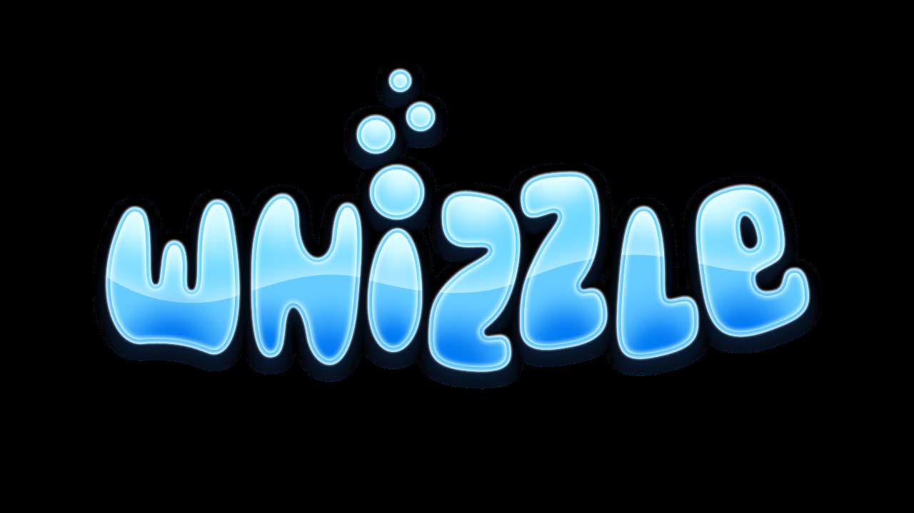
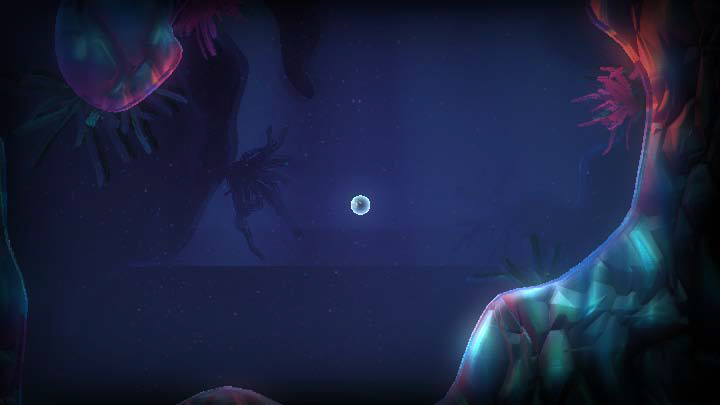
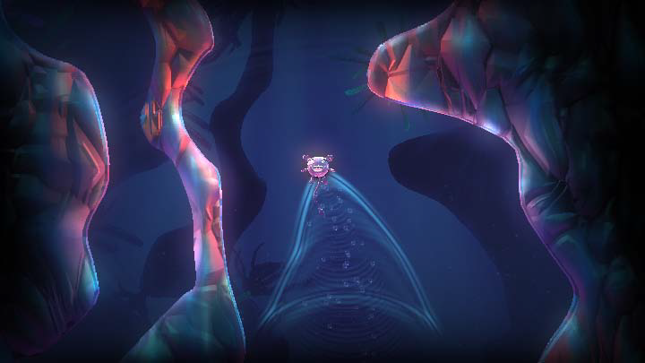
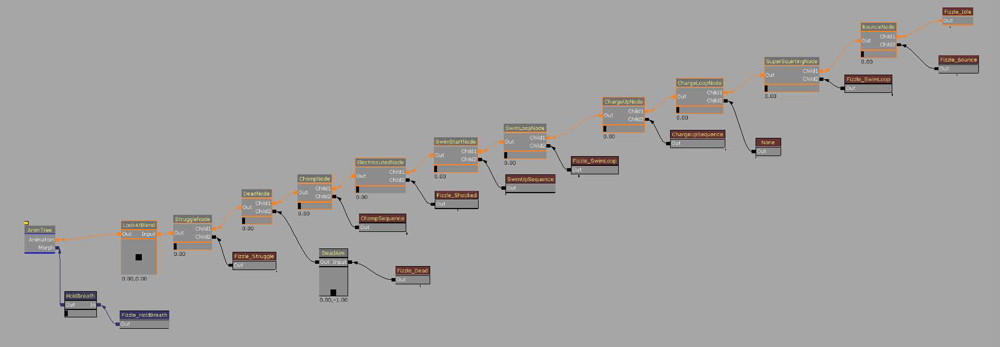
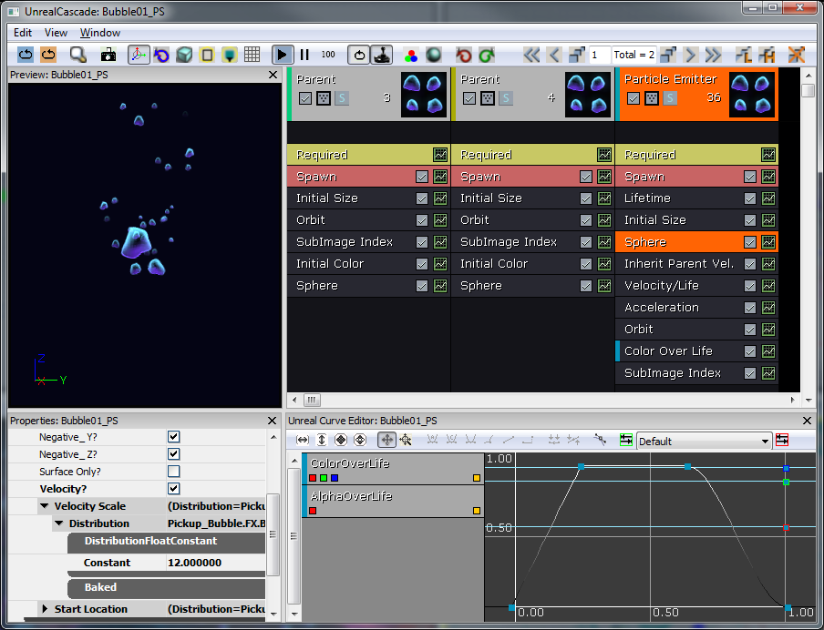
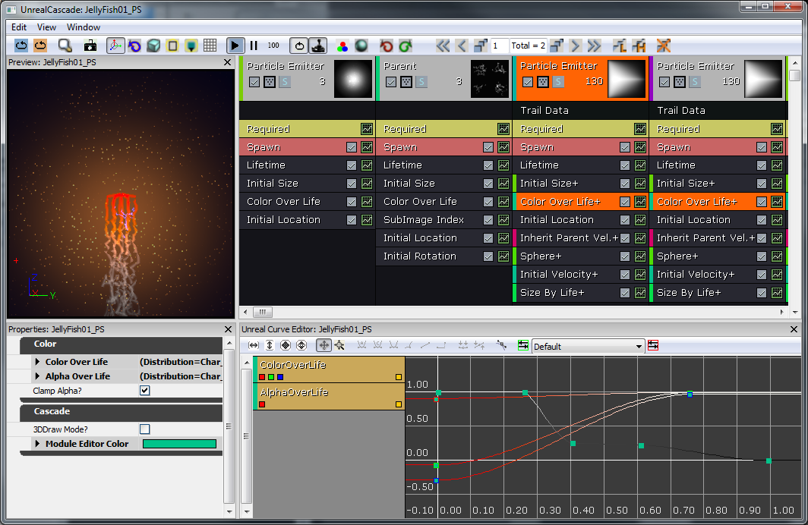
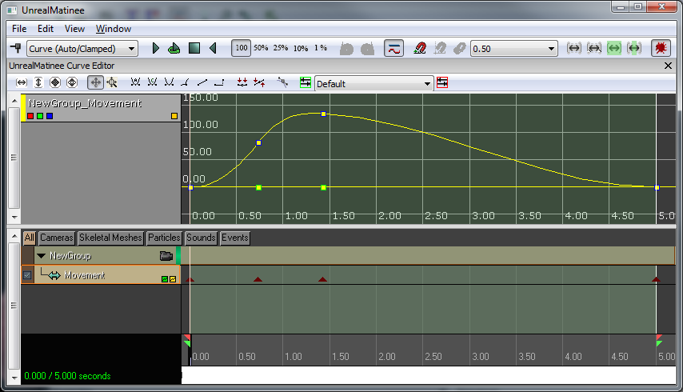
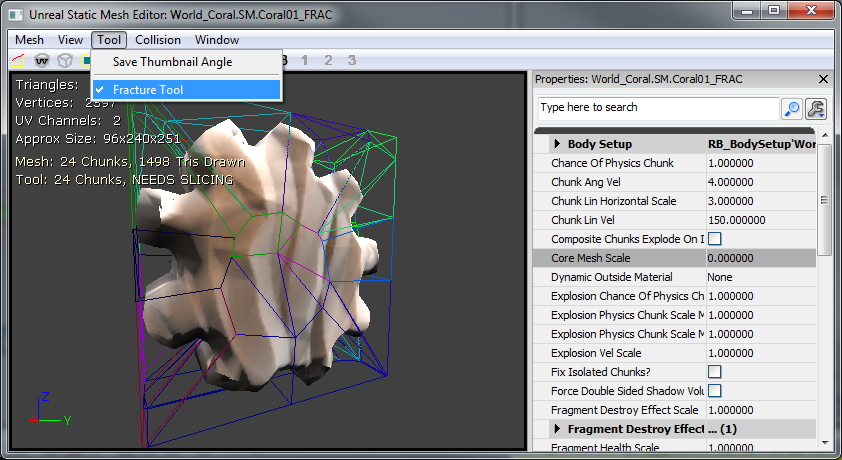

UDN
Search public documentation:
WhizzleCreationDocumentJP
English Translation
中国翻译
한국어
Interested in the Unreal Engine?
Visit the Unreal Technology site.
Looking for jobs and company info?
Check out the Epic games site.
Questions about support via UDN?
Contact the UDN Staff
中国翻译
한국어
Interested in the Unreal Engine?
Visit the Unreal Technology site.
Looking for jobs and company info?
Check out the Epic games site.
Questions about support via UDN?
Contact the UDN Staff
UDK ホーム > Whizzle 作成ドキュメント
Whizzle 作成ドキュメント
ドキュメントの変更ログ : Wiki は、 Sungjin Hong による。 pdf v1.2 に基づく。

概要
プロトタイプ
レベル
レベルは、レイヤー（すなわち 2D プレーンに向いているカメラのセット）の中に作られます。一般的には、およそ 3 つの主要なレイヤーから構成されています。前景レイヤーは、このエキサイティングなゲームが常にプレーされる舞台です。背景は、青い地と前景の暗いシルエットの広がりから構成されています。ジオメトリは両者の間に位置します。レベルのジオメトリは、ほぼ例外なく、押出形（extruded shape）からできています。これによって、レベルの生成プロセスが極めて簡単なものになります。キャラクター
設定
Ball（ボール）コリジョン（衝突）は、単純な球メッシュです。このメッシュは、Auto Convex Collision（自動凸形衝突）[Collision（コリジョン） > Auto Convex Collision]、および、UseSimpleRigidBodyCollision（簡易剛体コリジョンの使用）にチェックを入れます。 メインキャラクターは、大部分は物理制御されるように設計されていますが、プレーヤーがレベル内でキャラクターを制御する余地も少しばかり残しています。そのため、メインキャラクターは、AquaBall という名の KActor のサブクラスとして始まりました。このキャラクターは球体から始まることになるので、基本的な剛体コリジョンをともなった簡易球体から出発させることにしました。次に見られるように、placeable（配置可能）フラグによって、設計者は実際にこのサブクラスをレベル内に配置できるようになります。
メインキャラクターは、大部分は物理制御されるように設計されていますが、プレーヤーがレベル内でキャラクターを制御する余地も少しばかり残しています。そのため、メインキャラクターは、AquaBall という名の KActor のサブクラスとして始まりました。このキャラクターは球体から始まることになるので、基本的な剛体コリジョンをともなった簡易球体から出発させることにしました。次に見られるように、placeable（配置可能）フラグによって、設計者は実際にこのサブクラスをレベル内に配置できるようになります。
/*
* Copyright ⓒ 2009 Psyonix Studios. All Rights Reserved.
*
* AquaBall was created to allow for a physics representation of the character in the level
* It's the shape of a sphere, so the ripples in the water will be uniform
* Handles all movement, powers, and events that happen to the player
*/
class AquaBall extends KActorSpawnable
placeable;
DefaultProperties
{
Begin Object Name=StaticMeshComponent0
StaticMesh=StaticMesh'Char_Whizzle.SM.Whizzle_Collision01'
bNotifyRigidBodyCollision=true
HiddenGame=FALSE
ScriptRigidBodyCollisionThreshold=0.001
LightingChannels=(Dynamic=TRUE)
DepthPriorityGroup=SDPG_Foreground
End Object
}

カメラの最初のイタレーションは、Kismet で完全にセットアップされました。そのやり方は、CameraActor をワールド内で正の方向に配置するというものでした。Kismet では、次の機能を使用しました。Level Loaded (レベルのロード) [New Event (新しいイベント) > Level Loaded]、Set Camera Target (カメラターゲットの設定) [New Action (新しいアクション) > Camera (カメラ) > Set Camera Target]、そして Attach to Actor (アクタに付属) [New Action > Actor > Attach to Actor] 。セットアップについては、次のイメージをご覧ください。これでカメラはボールにしっかりと固定されますから、ボールがどの方向に移動しても、カメラも同じ方向に移動します。
動き
* Constraints (制約)* Aqua は 2D ゲームとして設計されたので、当然のことながら動きは 2 軸方向に制限されます。Z 軸が上下の動きに使用され、Y 軸は左右の軸として使用されます。AquaBall の動きを制限して、決して X 軸方向に動かないようにするには、PostBeginPlay 内でRB_ConstraintActorSpawnable を作成するとともに、プロパティをそれに合わせて設定します。none（なし）を InitConstraint(...) に引き渡すことによって、実際にボールをワールドに制限できるようになります。ボールが Y 軸 Z 軸方向でしか動かないので、カメラ (Kismet でしっかり固定されている) も、Y 軸 Z 軸方向でしか動きません。
// Initialize ball:
// - Constrain the ball to only move on the Y and Z axis
simulated event PostBeginPlay()
{
local RB_ConstraintActor TwoDConstraint;
super.PostBeginPlay();
// Create the constraint in the world by spawning it. Self is used to set the Owner of the constraint to the ball
// We want to Spawn it at the same location as the ball, which is stored in the Location variable and no rotation
TwoDConstraint = Spawn(class'RB_ConstraintActorSpawnable', self, '', Location, rot(0,0,0));
// bLimited is set to 1 by default, so turn it off for Y and Z to allow Y and Z axis movement
TwoDConstraint.ConstraintSetup.LinearYSetup.bLimited = 0;
TwoDConstraint.ConstraintSetup.LinearZSetup.bLimited = 0;
// Don't allow the ball to swing, which would make it move along the X axis
TwoDConstraint.ConstraintSetup.bSwingLimited = true;
// Initialize the constraint and constrain the ball to the world
TwoDConstraint.InitConstraint( self, None );
}
class AquaPlayerController extends AquaPlayerControllerBase;
// The AquaBall that we are controlling
var AquaBall Ball
// This is the default state while playing the game
state ControllingBall
{
// Ignore events that might cause the player to leave this state
ignores SeePlayer, HearNoise, Bump;
// Process Move is called after Player Move in order to actually set the Velocity, we but do this all in AquaBall
function ProcessMove(float DeltaTime, vector NewAccel, eDoubleClickDir DoubleClickMove, rotator DeltaRot);
// Update the player's movement direction
function PlayerMove( float DeltaTime )
{
if (Ball != None)
{
// RawJoyRight and RawJoyUp and the actual values of how much the player is pressing the joystick up, down, left or right
Ball.AxisInput(PlayerInput.RawJoyRight, PlayerInput.RawJoyUp);
}
}
}
// The initial state PlayerController is sent to, send it to our controlling state at the beginning
auto state PlayerWaiting
{
exec function PressStart()
{
}
Begin:
// Wait half a second before going into controlling ball state, so the ball doesn't move around before the player can actually see it
Sleep(0.5f);
Initialize();
GotoState('ControllingBall');
}
class AquaBall extends KActorSpawnable
placeable;
// In value is speed out value is push amount
var() InterpCurveFloat InputPushAmountCurve;
// A multiplier for how much the joystick pushes the player in the Z-axis
var() float InputPushAmountY;
// A multiplier for how much the joystick pushes the player in the Y-axis
var() float InputPushAmountZ;
// Caps input at this level, so it will go from -1 to this threshold
// setting it equal to 0 will mean no up force
var() float InputThresholdZ;
// Y is left and right, Z is up and down.... always between -1 and 1
var vector MovementDirection;
// Called from the PlayerController to set the direction the character should be moving in
simulated event AxisInput(float AxisRight, float AxisUp)
{
MovementDirection.Y = AxisRight;
MovementDirection.Z = AxisUp;
}
// Update the character's push forces every Tick
simulated event Tick(float DT)
{
super.Tick(DT);
// Do Input Push
AddInputForce( DT );
}
// Use the player's input to determine the direction the character should be pushed
simulated function AddInputForce(float DeltaTime)
{
local vector PushVector;
local float InputForceMultiplier;
// If the player is barely holding the joystick, don't allow player to move from that input
// Basically allows for hard coded deadzone
if( VSize(MovementDirection) < 0.2f )
return;
// Change the input force multiplier based on a curve
InputForceMultiplier = EvalInterpCurveFloat( InputPushAmountCurve, VSize(Velocity) );
// Store the actual direction that the ball should move
PushVector = MovementDirection;
// Only allow the player to move up in the Z direction a small amount depending on what InputThresholdZ is set to
PushVector.Z = FMin(InputThresholdZ, PushVector.Z);
// Increase the direction of the push by the multipliers (Constant + Curve)
PushVector.Y *= InputPushAmountY * InputForceMultiplier;
PushVector.Z *= InputPushAmountZ * InputForceMultiplier;
// Actually add the force to the Ball over a few frames
StaticMeshComponent.AddImpulse(PushVector * DeltaTime);
}
DefaultProperties
{
Begin Object Name=StaticMeshComponent0
StaticMesh=StaticMesh'Char_Whizzle.SM.Whizzle_Collision01'
bNotifyRigidBodyCollision=true
HiddenGame=FALSE
ScriptRigidBodyCollisionThreshold=0.001
LightingChannels=(Dynamic=TRUE)
DepthPriorityGroup=SDPG_Foreground
End Object
InputPushAmountY=3000
InputPushAmountZ=2000
InputThresholdZ=0.1f
InputPushAmountCurve=(Points=((InVal=0.0,OutVal=1.0),(InVal=600.0,OutVal=2.00),(InVal=2000,OutVal=6.0f),(InVal=4000,OutVal=16.0f)))
}
// How much gravity should be applied to the ball
// This is done custom because we don't want gravity on everything else
var() float Gravity;
// Update the character's push forces every Tick and rotation
simulated event Tick(float DT)
{
super.Tick(DT);
// Do Gravity
AddGravityForce( DT );
// Do Input Push
AddInputForce( DT );
}
// Add the gravity force
simulated function AddGravityForce(float DeltaTime)
{
// Gravity should always push down so use -1 in the Z axis for pushing down
StaticMeshComponent.AddImpulse(vect(0,0,-1) * Gravity * DeltaTime);
}
DefaultProperties
{
Begin Object Name=StaticMeshComponent0
StaticMesh=StaticMesh'Char_Whizzle.SM.Whizzle_Collision01'
HiddenGame=FALSE
LightingChannels=(Dynamic=TRUE)
DepthPriorityGroup=SDPG_Foreground
End Object
Gravity=3500
InputPushAmountY=3000
InputPushAmountZ=2000
InputThresholdZ=0.1f
InputPushAmountCurve=(Points=((InVal=0.0,OutVal=1.0),(InVal=600.0,OutVal=2.00),(InVal=2000,OutVal=6.0f),(InVal=4000,OutVal=16.0f)))
}
ゲームを機能させる
マップが起動するように設定する 自分専用のカスタムマップが始動するように設定するには、DefaultEngine.ini において変数をいくつか変更するだけです。主に使用される変数は、LocalMap なので、これを変更して、ご自分のマップファイル名が使用されるようにします。[Configuration] BasedOn=..\Engine\Config\BaseEngine.ini [URL] MapExt=ut3 Map=Default.ut3 LocalMap=Level01.ut3 TransitionMap=Default.ut3 EXEName=UTGame.exe DebugEXEName=DEBUG-UTGame.exe GameName=Unreal Tournament 3 GameNameShort=UT3
/*
* Copyright ⓒ 2009 Psyonix Studios. All Rights Reserved.
*/
class AquaGame extends GameInfo;
DefaultProperties
{
// Make sure to specify the package name before the class name
PlayerControllerClass=class'AquaGame.AquaPlayerController'
}
[Configuration] BasedOn=..\Engine\Config\BaseGame.ini [Engine.GameInfo] DefaultGame=AquaGame.AquaMenuGame DefaultServerGame=AquaGame.AquaMenuGame PlayerControllerClassName=AquaGame.AquaPlayerController
エフェクト
最初のエフェクトについてですが、このゲームはもともと水中が舞台であることを前面に押し出して制作されました。そのため、この時点まではワールドにバブル (泡) がありませんでした。そこで、これから player にバブルを追加してみることにしてみましょう。まず、バブルのマテリアルが必要となります。[Content Browser] (コンテンツブラウザ) の中で右クリックして、Material を作成してみてください。 これは、バブルを作る方法としてはかなり複雑なものであることが分かります。素晴らしいバブルテクスチャを作ることができたかもしれませんが、できの良い「球体」標準マップを用意していますので、時間を無駄にすることなく (また、テクスチャメモリも無駄にせずに)、これを利用することをお勧めします。図で行われていることを、次に解説します。
Texture Sample (テクスチャサンプル) は、用意されている「球体」標準マップです。RGB 部分 (黒の出力) が Fresnel (フレスネル) に渡され、ハロー効果が有効になります。さらに、Fresnel は、Vertex Color (頂点カラー) のアルファとともに Multiply (乗算) に渡されます。Vertex Color を使用することによって、バブルのトレイルパーティクルシステムが、自由にバブルをフェードイン、フェードアウトできます。この Multiply (増加) は、マテリアルの Emissive (エミッシブ) 入力に渡されます。BlendMode (ブレンドモード) がBLEND_Additive (ブレンド付加) に設定されことによって、バブルに半透明性をもたせるために Opacity (不透明性) に何かを入力する必要がなくなります。事実上、Emissive がカラーと不透明性の機能を果たすのです。最後に、LightingModel (ライトニングモデル) がMLM_Unlit (MLM ユニット) に設定されます。これは、バブルがライトニングを受け取る必要がない (受け取ることを望まない) からです。
これで、パーティクルシステムで使用するのに適したマテリアルができました。ふたたびコンテントブラウザ内で右クリックして、ParticleSystem (パーティクルシステム) を追加します。
これは、バブルを作る方法としてはかなり複雑なものであることが分かります。素晴らしいバブルテクスチャを作ることができたかもしれませんが、できの良い「球体」標準マップを用意していますので、時間を無駄にすることなく (また、テクスチャメモリも無駄にせずに)、これを利用することをお勧めします。図で行われていることを、次に解説します。
Texture Sample (テクスチャサンプル) は、用意されている「球体」標準マップです。RGB 部分 (黒の出力) が Fresnel (フレスネル) に渡され、ハロー効果が有効になります。さらに、Fresnel は、Vertex Color (頂点カラー) のアルファとともに Multiply (乗算) に渡されます。Vertex Color を使用することによって、バブルのトレイルパーティクルシステムが、自由にバブルをフェードイン、フェードアウトできます。この Multiply (増加) は、マテリアルの Emissive (エミッシブ) 入力に渡されます。BlendMode (ブレンドモード) がBLEND_Additive (ブレンド付加) に設定されことによって、バブルに半透明性をもたせるために Opacity (不透明性) に何かを入力する必要がなくなります。事実上、Emissive がカラーと不透明性の機能を果たすのです。最後に、LightingModel (ライトニングモデル) がMLM_Unlit (MLM ユニット) に設定されます。これは、バブルがライトニングを受け取る必要がない (受け取ることを望まない) からです。
これで、パーティクルシステムで使用するのに適したマテリアルができました。ふたたびコンテントブラウザ内で右クリックして、ParticleSystem (パーティクルシステム) を追加します。
 さてここで、バブルのトレイル (軌跡) がボールから任意のスピードでスポーンするようにしてみようと考えました。デフォルトでは、パーティクルシステムによるスポーンの速度は固定されています。そこで、それに代わって Spawn PerUnit (ユニットによるスポーン) モジュールを使用することにしました。基本的に、このモジュールは、パーティクルシステムがトラバース (移動) するユニット量 X (この場合は 10) ごとに、パーティクルをスポーンします。これで、プレーヤーの移動速度に基づいて、スポーン速度が速すぎたり遅すぎたりするようなことはなくなります。それでは、残りのモジュールについて順番に見ていくことにしましょう。
さてここで、バブルのトレイル (軌跡) がボールから任意のスピードでスポーンするようにしてみようと考えました。デフォルトでは、パーティクルシステムによるスポーンの速度は固定されています。そこで、それに代わって Spawn PerUnit (ユニットによるスポーン) モジュールを使用することにしました。基本的に、このモジュールは、パーティクルシステムがトラバース (移動) するユニット量 X (この場合は 10) ごとに、パーティクルをスポーンします。これで、プレーヤーの移動速度に基づいて、スポーン速度が速すぎたり遅すぎたりするようなことはなくなります。それでは、残りのモジュールについて順番に見ていくことにしましょう。
- Lifetime (ライフタイム) - 1～2秒
- Initial Size (初期サイズ) - 6～20 (均等にスケーリングされるため、X のみを設定するだけで十分です。)
- Sphere (球体) - StartRadius (開始半径) は 8、Velocity (速度) は true、VelocityScale (速度スケール) は 16 です。これによって、半径 8 ユニットのバブルがスポーンされ、外に向かって押されます。
- * Inherit Parent Velocity* (親速度の継承) - X、Y、Z については、-0.25 です。これは、プレーヤーワールドの速度を受け取り、それを -0.25 倍します。これによって、バブルがプレーヤーを強く押すように見えます。
- Velocity/Life (速度 / ライフ) - これは、曲線です。 X と Y の値は、時間が 0 から 0.25 まで経過する間に、1 から 0.25 まで減衰します。Z の値は 1 のままです。これによって、水平方向の動きはすべて鈍ります。 Acceleration (加速) - Z の値が 200 に設定されています。これによって、バブルが上昇します。(バブルの本来のあり方です!) Orbit (軌道) - OffsetAmount (オフセット量) Y は0～48、RotationRateAmount (回転速度量) X は -1～1 です。これによって、バブルの軌道は不定になります。
- Color Over Life (ライフ期間のカラー) - Curve Editor 内で示されているように、Alpha 値は、0 から 1 に上昇し、その後 0 に戻ります。色はこの場合問題となっていません。
Begin Object Class=ParticleSystemComponent Name=Bubbles
bAutoActivate=true
Template=ParticleSystem'Char_Whizzle.FX.BubbleTrail01_PS'
End Object
Components.Add(Bubbles)
 水中がテーマであることをさらに印象づけるために、FluidSurfaceActor (流体表面アクタ) を利用しました。ちょっとした手間をかけることによって、次のようなさざ波の効果を出すことができました。バブルトレイル効果との相乗効果で、かなり迫真的な水環境ができました。
最後に、AquaBall 上で、bAllowFluidSurfaceInteraction (流体表面インタラクション) を true に設定し、FluidSurfaceActor (これは、ボールが動く時にその背後で波を起こすものです) と相互作用をもつようにしました。Actor サブクラスは、デフォルトで true に設定されています。
キャラクターに関するこの初回パスが終わると、次のようになります。
水中がテーマであることをさらに印象づけるために、FluidSurfaceActor (流体表面アクタ) を利用しました。ちょっとした手間をかけることによって、次のようなさざ波の効果を出すことができました。バブルトレイル効果との相乗効果で、かなり迫真的な水環境ができました。
最後に、AquaBall 上で、bAllowFluidSurfaceInteraction (流体表面インタラクション) を true に設定し、FluidSurfaceActor (これは、ボールが動く時にその背後で波を起こすものです) と相互作用をもつようにしました。Actor サブクラスは、デフォルトで true に設定されています。
キャラクターに関するこの初回パスが終わると、次のようになります。

実装
可視的なキャラクター
設定
Whizzle が作成され、「3ds Max」においてリグされました。スケルトンのセットアップは、通常どおり行われ、すべてのボーンが 1 つのルートボーンを親にもちます。さらに、キャラクターは必要なボーンにスキニングされます。メッシュとスケルトンは、その後、Epic プラグインの ActorX (ActorX on UDN (UDN上のActorX)) を使用して、専用形式の .PSK 形式でエクスポートされます。そのためには、Output パス、ファイル名、および必要なフラグを設定します。Whizzle の場合、立てられたフラグは次の 2 つです。- All skin-types (すべてのスキンタイプ)
- Bake smoothing groups (スムージンググループのベイク)
 現在、このゲームには識別可能なキャラクターモデルがありません。そこで、そのモデルを AquaBall に加えなければなりません。このモデル (Whizzle) は、アニメーションをサポートするためにスケルトンメッシュになっています。スケルトンメッシュは、コリジョンに使用されるものよりも、ポリゴンという点ではいっそう複雑でもあります。そのため、引き続いて AquaBall が物理とインタラクトするメインオブジェクトとなります。ただし、キャラクターモデルは AquaBall の物理を継承しなければなりません。そのため、KAssetSpawnable のサブクラス (AquaCharacter) としてセットアップし、作成後 AquaBall に付属させます。AquaCharacter のスケルトンメッシュコンポーネントのブロックおよびコライドフラグすべてを、必ず false に設定してください。
現在、このゲームには識別可能なキャラクターモデルがありません。そこで、そのモデルを AquaBall に加えなければなりません。このモデル (Whizzle) は、アニメーションをサポートするためにスケルトンメッシュになっています。スケルトンメッシュは、コリジョンに使用されるものよりも、ポリゴンという点ではいっそう複雑でもあります。そのため、引き続いて AquaBall が物理とインタラクトするメインオブジェクトとなります。ただし、キャラクターモデルは AquaBall の物理を継承しなければなりません。そのため、KAssetSpawnable のサブクラス (AquaCharacter) としてセットアップし、作成後 AquaBall に付属させます。AquaCharacter のスケルトンメッシュコンポーネントのブロックおよびコライドフラグすべてを、必ず false に設定してください。
class AquaCharacter extends KAssetSpawnable
placeable;
DefaultProperties
{
BlockRigidBody=false
Begin Object Name=MyLightEnvironment
bEnabled=false
End Object
Begin Object Name=KAssetSkelMeshComponent
Animations=None
// Set up the Skeletal mesh reference
SkeletalMesh=SkeletalMesh'Char_Whizzle.SK.Wizzle01_SK'
// Add any anim sets and anim trees for later use
AnimSets.Add(AnimSet'Char_Whizzle.SK.Whizzle01_Animset')
PhysicsAsset=PhysicsAsset'Char_Whizzle.SK.Wizzle01_Physics'
AnimTreeTemplate=AnimTree'Char_Whizzle.SK.Whizzle01_Animtree'
MorphSets(0)=MorphTargetSet'Char_Whizzle.SK.Whizzle01_MorphSet'
// If the character has a Physics Asset, make sure to set this to true
bHasPhysicsAssetInstance=true
bUpdateKinematicBonesFromAnimation=true
bUpdateJointsFromAnimation=true
// Use 0 physics weight, so the character is completely moved by animation
PhysicsWeight=0.0f
// Collision flags that should all be set to false, so the skeletal mesh should not collide with anything
BlockRigidBody=false
CollideActors=false
BlockActors=false
BlockZeroExtent=false
BlockNonZeroExtent=false
RBChannel=RBCC_GameplayPhysics
RBCollideWithChannels=(Default=true,BlockingVolume=true,EffectPhysics=true,GameplayPhysics=true)
// Set a high RBDominanceGroup so the AquaBall can pull the AquaCharacter, but the AquaCharacter can't have any physics pulling on the Ball
RBDominanceGroup=30
// Set the character to show up in the foreground by default
DepthPriorityGroup=SDPG_Foreground
LightingChannels=(Dynamic=TRUE,Gameplay_1=TRUE)
Rotation=(Yaw=0)
End Object
}
AquaCharacter を AquaBall に付属させる
AquaBall の PostBeginPlay() の中で、AquaCharacter をスポーンします。AquaCharacter を AquaBall に付属させるには、別のRB_ConstraintActorSpawnable を使用します。この場合、ボールとキャラクターの間で必ず InitConstraint(...) を使用します。また、付属先のボーンも指定しなければなりません。ここで、AquaBall の StaticMeshComponent において、HiddenGame を true に設定します。これによって、AquaBall のメッシュは見えなくなります (実際のキャラクターメッシュが妨害を受けないようにするためです)。
// The character that is attached to this ball (the actual Fizzle you see on the screen)
// Store this reference for use later for playing animations and such
var AquaCharacter Character;
// Initialize ball:
// - Constrain the ball to only move on the Y and Z axis
// - Spawn the visible character
simulated event PostBeginPlay()
{
local RB_ConstraintActor TwoDConstraint;
super.PostBeginPlay();
TwoDConstraint = Spawn(class'RB_ConstraintActorSpawnable', self, '', Location, rot(0,0,0));
TwoDConstraint.ConstraintSetup.LinearYSetup.bLimited = 0;
TwoDConstraint.ConstraintSetup.LinearZSetup.bLimited = 0;
TwoDConstraint.ConstraintSetup.bSwingLimited = true;
TwoDConstraint.InitConstraint( self, None );
SpawnCharacter();
}
// Spawn the visible character mesh that can be seen
// Constrain the character to the ball so he's always upright
simulated function SpawnCharacter()
{
local RB_ConstraintActor CharacterConstraint;
// Specify the AquaCharacter class to spawn and spawn it at the AquaBall's location with no rotation
Character = Spawn(class'AquaCharacter', self, '', Location, rot(0,0,0));
// we want character to be in a 2 : 1.5 ratio to this collision
Character.SetDrawScale(DrawScale * 1.33333f);
// Spawn the Constraint to the ball
CharacterConstraint = Spawn(class'RB_ConstraintActorSpawnable', self, '', Location);
// Don't allow any twisting around, we will handle rotation manually later on if we want the character to rotate while moving
CharacterConstraint.ConstraintSetup.bSwingLimited = true;
CharacterConstraint.ConstraintSetup.bTwistLimited = true;
// Initialize the constraint between the character and the AquaBall on the bone 'b_Head'
CharacterConstraint.InitConstraint(Character, self, 'b_Head');
}
DefaultProperties
{
Begin Object Name=StaticMeshComponent0
StaticMesh=StaticMesh'Char_Whizzle.SM.Whizzle_Collision01'
// Hide the Ball mesh now because only the AquaCharacter's skeletal mesh should be visible
HiddenGame=TRUE
LightingChannels=(Dynamic=TRUE)
DepthPriorityGroup=SDPG_Foreground
End Object
}

アニメーション
さて、キャラクターができたので、これに命を吹き込みます。アニメーションはすべて、今回すでにエクスポートされているメッシュおよびスケルトンと同一のものを使用して、3ds Max で作成されました。アニメーションが完成すると、ActorX を使用してエクスポートしました。ActorX によってアニメーションをエクスポートすると、.PSA ファイルができます。エディタで Whizzle メッシュを開き、[File] メニューから、新しい AnimSet (AnimSet User Guide (AnimSet ユーザーガイド)) をそのメッシュのために作成しました。AnimSet を使用して、このキャラクターのためのアニメーションすべてを保持します。AnimSet の作成後、.PSA ファイルをすべて AnimSet にインポートしました。 AnimSet にアニメーションが備わったので、AnimTree に進むことができます (AnimTree User Guide (AnimTree ユーザーガイド))。ここでの目標は、キャラクターをできるだけ生き生きとさせることと、ワールドで生じるインタラクションに応じて、あるアニメーションから他のアニメーションへと融合させることでした。AnimTree をセットアップすることによって、デフォルトでアイドリングアニメーションが常に再生されるようにするとともに、AnimNodeBlends を AnimTree から分岐させて、他のアニメーションも再生されるようにしました。Fizzle_Struggle といったようなアニメーションをいくつかセットアップしてループアニメーションにしました。bCauseActorAnimEnd フラグを使って一度だけ再生されるように設定したアニメーションもありました。ブレンドノードの名前によって、ふさわしいイベントが発生した時に、コードを通してアニメーションを呼び出すことができました。キャラクターはカメラに向いていますが、ある程度プレーヤーがキャラクターを制御できるようにしたいと思いました。そのため、AnimNodeAimOffset を AnimTree の始めに追加しました。これによって、ルートボーンを回転させたり、プレーヤーが導く方向を Whizzle が「見る」ようにすることができました。
とらわれた Fizzle
メインのゲームタイプには、とらわれた Fizzle を解放するという主な目標があります。そこで、まず、とらわれた Fizzle たちを作成する必要があります。Fizzle を解放するためにプレーヤーは、Fizzle が入れられている独房に激突して破壊し、Fizzle が脱獄できるようにしなければなりません。激突エフェクトをすばらしいものにするために FracturedStaticMeshActor サブクラスを使用します。まず、コンテントのために使用する FracturedStaticMesh が必要となります。 フラクチャ (破砕) メッシュは、コリジョンをともなった静的メッシュから作成されます。シンプルなケージを作成して、.ASE ファイルとして UE3 にインポートしました。エディタ内で静的メッシュを開いて、6DOP Simplified (単純化された) コリジョンを適用し、[Fracture Tool] (フラクチャツール) ボタンを押しました。Num Chunks を 8 に設定しました。これは、スクリーン上のケージが小さいことと、ケージのためにチャンクがあまり必要とされないということが考慮されたものです。その他の設定については、すべてデフォルトの値が使用されました。 この後ゲームには、おそらくこのような破壊できるオブジェクトが他にも必要となるはずです。そこで、AquaFractureMeshActor という名前のスーパークラスを作っておくのがよいでしょう。それの基本的な機能としては、メッシュのあらゆるピースを分解するイベントを呼び出すことによって、破壊可能なものであればどんなものでも破壊することが想定されるでしょう。他のクラスは、BreakBarrier(...) イベントを呼び出すことによって、Fizzle のケージを壊すことができます。また、Explode() 関数をオーバーライドすることによって、デフォルトのコリジョンチャンネルを無効にすることができます。これが有効化されていると、不確実でおかしなやり方でフラクチャのピースが分解されるようになるのです。残念なことに、そのためには、関数全体をコピーしなければなりません。理由は、スポーンされる各部分に関するプロパティの設定をエンジンが明らかにしないからです。また、Explode() は 1 度しか呼び出すことができないようにしてください。最後に、ものがエクスプロード (分解) する場合は、そのコリジョンを切ってください。デフォルトではこのようなことが起きないからです。
この後ゲームには、おそらくこのような破壊できるオブジェクトが他にも必要となるはずです。そこで、AquaFractureMeshActor という名前のスーパークラスを作っておくのがよいでしょう。それの基本的な機能としては、メッシュのあらゆるピースを分解するイベントを呼び出すことによって、破壊可能なものであればどんなものでも破壊することが想定されるでしょう。他のクラスは、BreakBarrier(...) イベントを呼び出すことによって、Fizzle のケージを壊すことができます。また、Explode() 関数をオーバーライドすることによって、デフォルトのコリジョンチャンネルを無効にすることができます。これが有効化されていると、不確実でおかしなやり方でフラクチャのピースが分解されるようになるのです。残念なことに、そのためには、関数全体をコピーしなければなりません。理由は、スポーンされる各部分に関するプロパティの設定をエンジンが明らかにしないからです。また、Explode() は 1 度しか呼び出すことができないようにしてください。最後に、ものがエクスプロード (分解) する場合は、そのコリジョンを切ってください。デフォルトではこのようなことが起きないからです。
/*
* Copyright ⓒ 2009 Psyonix Studios. All Rights Reserved.
*/
class AquaFractureMeshActor extends FracturedStaticMeshActor;
var bool bExploded;
var AquaPlayerController PlayerThatHitMe;
// A simple way to make sure this barrier gets broken on the first hit
event BreakBarrier( Controller EventInstigator, vector HitNormal )
{
// Store the player that broke this Mesh for use in subclasses
PlayerThatHitMe = AquaPlayerController(EventInstigator);
Explode();
}
// Make sure explode only happens once
// Also set the lighting channel of the parts
simulated event Explode()
{
local array<byte> FragmentVis;
local int i;
local vector SpawnDir;
local FracturedStaticMesh FracMesh;
local FracturedStaticMeshPart FracPart;
local float PartScale;
local ParticleSystem EffectPSys;
// Don't allow explode to be called more than once
if(bExploded)
return;
bExploded = true;
FracMesh = FracturedStaticMesh(FracturedStaticMeshComponent.StaticMesh);
// Particle Systems
// Look for override first
if(OverrideFragmentDestroyEffects.length > 0)
{
// Pick randomly
EffectPSys = OverrideFragmentDestroyEffects[Rand(OverrideFragmentDestroyEffects.length)];
}
// No override array, try the mesh
else if(FracMesh.FragmentDestroyEffects.length > 0)
{
EffectPSys = FracMesh.FragmentDestroyEffects[Rand(FracMesh.FragmentDestroyEffects.length)];
}
// Spawn emitter in the emitter pool
WorldInfo.MyEmitterPool.SpawnEmitter(EffectPSys, Location);
// Iterate over all visible fragments spawning them
FragmentVis = FracturedStaticMeshComponent.GetVisibleFragments();
for(i=0; i<FragmentVis.length; i++)
{
// If this is a currently-visible, non-core fragment, spawn it off.
if((FragmentVis[i] != 0) && (i != FracturedStaticMeshComponent.GetCoreFragmentIndex()))
{
SpawnDir = FracturedStaticMeshComponent.GetFragmentAverageExteriorNormal(i);
PartScale = FracMesh.ExplosionPhysicsChunkScaleMin + FRand() * (FracMesh.ExplosionPhysicsChunkScaleMax - FracMesh.ExplosionPhysicsChunkScaleMin);
// Spawn part- inherit this actors velocity
FracPart = SpawnPart(i, (0.5 * SpawnDir * FracMesh.ChunkLinVel) + Velocity, 0.5 * VRand() * FracMesh.ChunkAngVel, PartScale, TRUE);
if(FracPart != None)
{
// When something explodes we disallow collisions between all those parts.
FracPart.FracturedStaticMeshComponent.SetRBCollidesWithChannel(RBCC_FracturedMeshPart, FALSE);
// Disallow collisions of the Default collision channel too, so the parts don't go crazy
FracPart.FracturedStaticMeshComponent.SetRBCollidesWithChannel(RBCC_Default, FALSE);
}
FragmentVis[i] = 0;
}
}
// Update the visibility of the actor being spawned off of
FracturedStaticMeshComponent.SetVisibleFragments(FragmentVis);
// Turn off the collision to make sure the player doesn't hit invisible walls
TurnOffCollision();
}
function TurnOffCollision()
{
// Turn off physics
SetPhysics(PHYS_None);
// Turn off Collide and Blocking flags
SetCollision(false, false, false);
// Don't allow blocking rigid body
if (CollisionComponent != None)
{
CollisionComponent.SetBlockRigidBody(false);
}
// Call event that sub classes will use to notify that the mesh is completely broken
OnFractureMeshBroken();
}
// override in sub classes
function OnFractureMeshBroken()
{
Destroy();
}
DefaultProperties
{
bWorldGeometry=FALSE
}
/*
* Copyright ⓒ 2009 Psyonix Studios. All Rights Reserved.
*/
class BreakableCageAndFizzle extends AquaFractureMeshActor
placeable;
DefaultProperties
{
Begin Object Name=FracturedStaticMeshComponent0
StaticMesh=FracturedStaticMesh'Char_CagedWhizzle.SM.Cage01_FRAC'
End Object
DrawScale=1.5f
}
Collection (収集)
GameInfo サブクラスは、ゲームの勝敗の判定処理を行うのに最も適しています (FizzleCollectionGame)。PostBeginPlay() 上で、すべての DynamicActors をループしてゲーム内の BreakableCageAndFizzles の数をカウントします。AquaGameReplicationInfo の中で、ゲーム内に残されている Fizzles の合計数を設定します。このクラスは、ゲームをネットワーク化しなければならない時に備えて作成されます。メインゲームのステート (状態) 変数が、正しいクラスの中に置かれることになります。Fizzle が収集された場合は常に、FizzleCollected(...) を呼び出します。この関数は、いくつの Fizzle がゲーム内に残っているかカウントします。
// how many Fizzles are left in the game?
var int NumberOfFizzles;
// Initialize the amount of fizzles in the game
event PostBeginPlay()
{
Super.PostBeginPlay();
CountFizzles();
}
// Count the number of fizzles in the level, so the player
// knows what the goal is, when we have the number, initialize the other variables
function CountFizzles()
{
local BreakableCageAndFizzle P;
foreach WorldInfo.DynamicActors(class'BreakableCageAndFizzle', P)
{
// Count the number of Fizzles
NumberOfFizzles++;
}
// Make the Number of Fizzles data available in the GameReplicationInfo
AquaGameReplicationInfo(GameReplicationInfo).NumberOfFizzlesRemaining = NumberOfFizzles;
if(NumberOfFizzles < 1)
{
// If the level isn't loaded yet, there would be no BreakableCageAndFizzle actors, so check again after a short amount of time
SetTimer(0.3f, false,'CountFizzles');
}
}
// Called whenever a Fizzle has been set free
// Update the remaining number of fizzles and end the game if there's none left
function FizzleCollected(AquaPlayerController inPlayer)
{
// Decrease the amount of Fizzles left to be freed
NumberOfFizzles--;
// Make sure to keep the GameReplicationInfo up to date
AquaGameReplicationInfo(GameReplicationInfo).NumberOfFizzlesRemaining = NumberOfFizzles;
// If there are no Fizzles left, end the game
if(NumberOfFizzles <= 0)
{
EndGame( inPlayer.PlayerReplicationInfo, "You Won!");
}
}
// When the cage is broken, we want to play animations on the Fizzle
// And set it free
// Also update game info to record one saved
function OnFractureMeshBroken()
{
// Tell the GameInfo to update the amount of remaining Fizzles
FizzleCollectionGame(WorldInfo.Game).FizzleCollected(PlayerThatHitMe);
// Tell the player that a Fizzle was collected. Useful for later when we have a HUD
PlayerThatHitMe.SetFizzleAmount( );
}
終了
Fizzle が 1 体もゲーム内に残っていない場合は、EndGame(...) を呼び出して、ゲームをゲーム終了ステートにします。ゲームが終了したら、AquaGameReplicationInfo.bGameOver を true に設定し、その 1.5 秒後に AquaGameReplicationInfo.bMatchIsOver を true に設定します。これらの 2 つの変数によって、ゲーム終了 HUD の表示や、ゲーム終了時におけるキャラクターの静止といった特別なゲーム処理が可能になります。
// Handle what to do when the game is over, if we won then set up the proper variable
function EndGame( PlayerReplicationInfo Winner, string Reason )
{
if(bGameEnded)
return;
// don't end game if not really ready
if ( !CheckEndGame(Winner, Reason) )
{
bOverTime = true;
return;
}
// This flag will be used to start the game over sequence
AquaGameReplicationInfo(GameReplicationInfo).bGameOver = true;
if(Reason ~= "You Won!")
{
// Setting this flag will allow us to know that the game was actually won
AquaGameReplicationInfo(GameReplicationInfo).bWonGame = true;
}
// Allow replication to happen before reporting scores, stats, etc.
SetTimer( 1.5,false,nameof(PerformEndGameHandling) );
bGameEnded = true;
EndLogging(Reason);
}
能力
これまで目標は、Fizzle が閉じ込められているケージを破壊することでしたが、その方法がまだないのです! ここで、プレーヤーに特別な能力が必要となります。Super Squirt (スーパースカート (噴出)) の最初の段階で必要となる特別な関数を AquaBall 内に追加します。この関数は、プレーヤーがジョイスティックを使って指し示すあらゆる方向に、キャラクターを単に吹き飛ばします。キャラクターが何かにぶつかった場合は、破壊できる BreakableCageAndFizzle アクタが近くに存在しているかどうかを調べます。 AquaBall が、RigidBody (剛体) をブロックするもの (たとえばワールドやケージ) にぶつかった場合は必ず、RigidBodyCollision(...) イベントが呼び出されます。RigidBodyCollision(...) イベントが呼び出されると、エクスプロード (分解) 能力(SuperSquirtExplodePower()) が使用されるようにします。これは、周辺にあるあらゆる BreakableCageAndFizzles を破壊するものです。RigidBodyCollision(...) が呼び出されるのは、AquaBall の StaticMeshComponent 内で、2 つの変数がセットアップされた場合だけです。bNotifyRigidBodyCollision を true に設定するとともに、ScriptRigidBodyCollisionThreshold を 0 より大きい値に設定します。 ExplodePower() 関数は、InitializeVariables() の中で作られる BarrierCache を利用します。このおかげで、計算時間を節約することができ、エクスプロード能力を使用するたびに DynamicActors すべてを調べなくても済むようになります。
// Have a cache of all barriers in the level so we don't use a lot of computing time searching each time we explode
var array<AquaFractureMeshActor> BarrierCache;
// True if we are currently super squirting and can explode when we hit a wall
var bool bCanExplode;
// Multiplier for the amount of force to use for Super Squirt power
var() float SuperSquirtForceMax;
simulated function SuperSquirt()
{
local vector Direction;
// Use the cached direction that the player was pointing with the joystick
Direction = MovementDirection;
// Make sure the player stops movement before giving big boost, so the player can't reach an extremely high speed and get out of the level
StaticMeshComponent.SetRBLinearVelocity(vect(0,0,0));
// Add the Impulse to the character in the Direction with a magnitude of SuperSquirtForceMax
StaticMeshComponent.AddImpulse( Direction * SuperSquirtForceMax,,,true );
// turn on exploding flag, so we only explode once per SquirtSquirt
bCanExplode = true;
}
// If we can explode and we hit something, then do the explode power
simulated event RigidBodyCollision(PrimitiveComponent HitComponent, PrimitiveComponent OtherComponent, const out CollisionImpactData RigidCollisionData, int ContactIndex)
{
Super.RigidBodyCollision( HitComponent, OtherComponent, RigidCollisionData, ContactIndex);
// Do a sanity check here to make sure the thing we're hitting actually has a component
if(OtherComponent != none)
{
// Only allow exploding to happen once
if(bCanExplode)
{
bCanExplode = false;
// Start the explode power!
ExplodePower();
}
}
}
// The exploding power after Super Squirting to break barriers around us
simulated function ExplodePower()
{
local AquaFractureMeshActor Barrier;
foreach BarrierCache( Barrier )
{
if(Barrier == none)
continue;
if( VSize(Location - Barrier.Location) < ExplodePowerRange )
{
Barrier.BreakBarrier( MyController, Normal( Location - Barrier.Location ) );
}
}
}
// Initialize any variables that we might need for later
// This is called right before the ball is registered for input
// So a good place to look for objects in the level
simulated function InitializeVariables()
{
local AquaFractureMeshActor Barrier;
foreach WorldInfo.DynamicActors( class'AquaFractureMeshActor', Barrier)
{
BarrierCache.AddItem( Barrier );
}
}
DefaultProperties
{
Begin Object Name=StaticMeshComponent0
StaticMesh=StaticMesh'Char_Whizzle.SM.Whizzle_Collision01'
// Turn on Rigid Body Collision notifications
bNotifyRigidBodyCollision=true
HiddenGame=TRUE
// Any Rigid Body Collision with a force above 0.001 will cause RigidBodyCollision(...) to be called
ScriptRigidBodyCollisionThreshold=0.001
LightingChannels=(Dynamic=TRUE)
DepthPriorityGroup=SDPG_Foreground
End Object
}
仕上げ
空気
ゲームをもう少し難しいものにするために、プレーヤーが Super Squirt を使用するたびに、プレーヤーが空気を失うようにするとともに、エアバブルを得ることによって空気の補充ができるようにします。KActor に触れることができて、なおかつ KActor をブロックしないオブジェクトを手に入れるという動作は、実際かなり難しいものです。AquaPickupable という名前のクラスを作成して、このような動作が必要となるオブジェクト (エアバブルなど) を処理することにします。AquaPickupable で使用される主な関数は、Touch(...) です。この関数は、入手エフェクトを再生する機能を持つとともに、AquaPlayerController クラス内のイベントを呼び出すことによって、何かを入手した際どうすべきかをプレーヤーに教えるようにします。
/*
* Copyright ⓒ 2009 Psyonix Studios. All Rights Reserved.
*
* An abstract class for things that the player can pick up
* They should be Static Meshes and not block the player
*/
class AquaPickupable extends DynamicSMActor_Spawnable
abstract;
// true if the object has been picked up already
var bool bPickedUp;
// The effect to play when the object is picked up
var ParticleSystemComponent PickupEffect;
// The AquaBall that picked us up
var AquaBall BallToucher;
// True if we should play the PickupEffect on touch, otherwise it should be handled custom
var bool bPlayEffectOnTouch;
// When the Pickupable is touched by the player, play the pick up effect and call subclassable OnPickup()
// Make sure it can only be picked up once with bPickedUp
event Touch( Actor Other, PrimitiveComponent OtherComp, vector HitLocation, vector HitNormal )
{
if(!bPickedUp && AquaBall(Other) != none)
{
Super.Touch(Other, OtherComp, HitLocation, HitNormal);
bPickedUp = true;
BallToucher = AquaBall(Other);
if(bPlayEffectOnTouch)
PlayPickupEffect(AquaBall(Other));
OnPickup(AquaBall(Other).MyController);
}
}
// overwrite this in subclasses
function OnPickup(AquaPlayerController Player);
// Plays the pickup effect and destroys the pickupable
function PlayPickupEffect(AquaBall Ball)
{
if(PickupEffect != none)
{
PickupEffect.ActivateSystem();
}
Destroy();
}
DefaultProperties
{
Begin Object Class=ParticleSystemComponent Name=PickupEffect0
bAutoActivate=false
DepthPriorityGroup=SDPG_Foreground
End Object
PickupEffect=PickupEffect0
Components.Add(PickupEffect0)
bPlayEffectOnTouch=true
}
DefaultProperties
{
bBlockActors=true
bCollideActors=true
bStatic=false
bWorldGeometry=false
Physics=PHYS_None
bNoEncroachCheck=false
Begin Object Name=StaticMeshComponent0
CollideActors=TRUE
BlockActors=FALSE
BlockRigidBody=FALSE
BlockZeroExtent=TRUE
BlockNonZeroExtent=TRUE
RBCollideWithChannels=(Default=TRUE,BlockingVolume=TRUE,GameplayPhysics=TRUE,EffectPhysics=TRUE,FracturedMeshPart=FALSE)
End Object
}
DefaultProperties
{
// The main static mesh that is used to detect collision with Rigid Body Physics objects
Begin Object Name=StaticMeshComponent0
StaticMesh=StaticMesh'Char_Whizzle.SM.Whizzle_Collision01'
bNotifyRigidBodyCollision=true
HiddenGame=TRUE
ScriptRigidBodyCollisionThreshold=0.001
LightingChannels=(Dynamic=TRUE)
DepthPriorityGroup=SDPG_Foreground
End Object
// This collision object is used to get a touch event from the air and other pickupables
Begin Object Class=StaticMeshComponent Name=StaticMeshComponent1
StaticMesh=StaticMesh'Char_Whizzle.SM.Whizzle_Collision01'
// Make sure it's hidden like our other one
HiddenGame=TRUE
// We only want to collide with actors for touch, don't use Block
CollideActors=TRUE
BlockActors=FALSE
// We have to always check collision on this collision component, so it actually checks for touches
AlwaysCheckCollision=TRUE
RBCollideWithChannels=(Default=TRUE,BlockingVolume=TRUE,GameplayPhysics=TRUE,EffectPhysics=TRUE,FracturedMeshPart=FALSE)
End Object
Components.Add(StaticMeshComponent1)
}

丸い形にするために、Fizzle と同じメッシュをコリジョンのために使用します。設計方針として、バブルは、パーティクルシステムによってのみプレーヤーに表示されるものとします。そのため、コリジョンのための StaticMesh は、表示されないようにしなければなりません。また、バブルは通常、水面に向かって浮上していくものなので、その振る舞いをシミュレートするコードを書くことにします。浮上する振る舞いを実現させるための基本的な構想は、バブルをゆっくりと左右に動かしながら同時に浮上させるというものです。また、バブルが発生した場所からあまりにも離れたところに浮上しないようにさせます。そのため、前後に揺れながら、だいたいジグザグになるように上昇させます。
/*
* Copyright ⓒ 2009 Psyonix Studios. All Rights Reserved.
*/
class AirBubble extends AquaPickupable
placeable;
// The amount of air that is given to the player when picked up
var() float AirAmount;
// The velocity that the bubble should drift in after spawning Modified in Tick to change direction
var vector FloatingSpeed;
// The initial location the bubble was spawned at, used to make sure the bubble doesn't drift too far away
var vector OriginalLocation;
// The maximum distance on the Y-axis that the bubble can float away from the OriginalLocation
var float MaxHorizontalFloatDistance;
// A multiplier for which direction the bubble is floating now either 1 or -1
var float CurrentDirection;
// When picked up by Player do the following:
// - Make character play chomping animation
function OnPickup(AquaPlayerController Player)
{
// Call event to play animation for eating the bubble
BallToucher.PlayGotAir();
// Give air to the player
Player.GotAir(AirAmount);
}
// Tick handles the movement of the bubble in the following situations:
// - If the bubble has been picked up, move it closer to the player's mouth
// - By default float up towards the top of the map while drifting left and right
simulated event Tick(float DeltaTime)
{
local vector NewLocation;
local float DistanceFromCenter;
Super.Tick(DeltaTime);
// Update the new location with the new direction we should be floating in
NewLocation = Location;
NewLocation.Z += FloatingSpeed.Z * DeltaTime;
NewLocation.Y += FloatingSpeed.Y * DeltaTime;
// Make sure it doesn't go farther than the max distance away from the Original Location
NewLocation.Y = FClamp(NewLocation.Y, OriginalLocation.Y - MaxHorizontalFloatDistance, OriginalLocation.Y + MaxHorizontalFloatDistance);
// Actually set the location of the Air Bubble
SetLocation(NewLocation);
// Update the speed based on the distance from the center, so it slows down the farther away it is from the original location
DistanceFromCenter = Abs(NewLocation.Y - OriginalLocation.Y) / MaxHorizontalFloatDistance;
FloatingSpeed.Y = FClamp((1 - DistanceFromCenter) * default.FloatingSpeed.Y, 20, default.FloatingSpeed.Y);
// Make sure to switch directions when we reach the left or right boundary
if(Abs(NewLocation.Y - OriginalLocation.Y) >= MaxHorizontalFloatDistance)
{
CurrentDirection *= -1;
}
FloatingSpeed.Y *= CurrentDirection;
}
// Initialize variables and allow for random movement speed
simulated event PostBeginPlay()
{
Super.PostBeginPlay();
// Use to make sure we don't get too far away from the original location
OriginalLocation = Location;
// each bubble should be a random speed, so they don't look like they are all doing the same thing
FloatingSpeed.Z = FRand() * 40 + FloatingSpeed.Z;
// Randomize both axes speeds
FloatingSpeed.Y = FRand() * 25 + FloatingSpeed.Y;
}
DefaultProperties
{
// Collision mesh
Begin Object Name=StaticMeshComponent0
StaticMesh=StaticMesh'Char_Whizzle.SM.Whizzle_Collision01'
HiddenGame=TRUE
Scale=2.4f
End Object
// Bubble effect (the actual visual that you see)
Begin Object Class=ParticleSystemComponent Name=BubbleEffect
bAutoActivate=true
Template=ParticleSystem'Pickup_Bubble.FX.Bubble01_PS'
DepthPriorityGroup=SDPG_Foreground
TranslucencySortPriority=1
End Object
Components.Add(BubbleEffect)
// Don't play any effect wh
PickupEffect=none
CurrentDirection=1
DrawScale=1.5f
MaxHorizontalFloatDistance=100
FloatingSpeed=(Z=120,Y=100)
bPlayEffectOnTouch=false
}
クラゲ (Jellyfish)
クラゲが追加されて、ゲームのバウンス (跳ね返り) システムがより楽しいものになりました。ただし、クラゲの最下部にぶつかるとショックを受けるというリスクも付け加えました。クラゲは最初、コリジョン用のメッシュを持った単なるパーティクルシステムとして出発しました。後に、ビジュアルエフェクト用の SkeletalMesh を使用するように変更され、その結果、プレーヤーがぶつかるとつぶれるエフェクトを再生できるようになりました。 クラゲのパーティクルの構成は、オレンジ色にきらめく大きな発光体、および、青い電気ショック、8 本の触手からなります。これらは、軌跡のエミッターとランダムな速度をともなって表現され、ノイズが付加されます。
キャラクターがクラゲからバウンスさせるようにするのは、とても簡単です。そのためには、コリジョン用の StaticMeshComponent を使用し、そのための RigidBodyCollision イベントを有効にします。RigidBodyCollision(...) は、呼び出されると、プレーヤーがバウンスすべき方向を理解し、プレーヤーの StaticMeshComponent に推進力を加えます。
/*
* Copyright ⓒ 2009 Psyonix Studios. All Rights Reserved.
*/
class JellyFishBase extends StaticMeshActorSpawnable
placeable;
// Multiplier for the amount of force given to the player when it hits the jellyfish
var() float BounceForce;
// if Hitting the player, handle electrocution and bouncing the player off
simulated event RigidBodyCollision(PrimitiveComponent HitComponent, PrimitiveComponent OtherComponent, const out CollisionImpactData RigidCollisionData, int ContactIndex)
{
local vector BounceDirection, DirectionToBall;
if(OtherComponent != none)
{
// Get the direction to bounce the player off in
BounceDirection = Normal(RigidCollisionData.TotalNormalForceVector);
BounceDirection.X = 0;
DirectionToBall = Normal(AquaBall(OtherComponent.Owner).Location - Location);
// Sanity check to make sure the Normal is facing the correct way
if(DirectionToBall dot BounceDirection < 0)
{
BounceDirection = -BounceDirection;
}
// Any time the Jellyfish hits a ball, apply the bounce force
// Electrocution will be added later
if( AquaBall(OtherComponent.Owner) != none)
{
AquaBall(OtherComponent.Owner).StaticMeshComponent.AddImpulse(BounceDirection * BounceForce);
}
}
}
DefaultProperties
{
// The main collision mesh for the Jellyfish - used to get RigidBodyCollision events
Begin Object Class=StaticMeshComponent Name=StaticMeshComponent0
LightEnvironment=MyLightEnvironment
bUsePrecomputedShadows=FALSE
StaticMesh=StaticMesh'Char_JellyFish.SM.JellyFish_Collision01'
BlockActors=TRUE
BlockZeroExtent=TRUE
BlockNonZeroExtent=TRUE
BlockRigidBody=TRUE
bNotifyRigidBodyCollision=true
ScriptRigidBodyCollisionThreshold=0.001
HiddenGame=TRUE
End Object
CollisionComponent=StaticMeshComponent0
Components.Add(StaticMeshComponent0)
// The main visual you see for the Jellyfish, the tentacles
Begin Object Class=ParticleSystemComponent Name=ParticleSystemComponent0
bAutoActivate=TRUE
Template=ParticleSystem'Char_JellyFish.FX.JellyFish01_PS'
DepthPriorityGroup=SDPG_World
Translation=(X=64)
End Object
Components.Add(ParticleSystemComponent0)
JellyFishParticle=ParticleSystemComponent0
Physics=PHYS_Interpolating
BounceForce=3500
BlockRigidBody=TRUE
bCollideActors=TRUE
bBlockActors=TRUE
bWorldGeometry=FALSE
bCollideWorld=TRUE
bNoEncroachCheck=FALSE
bProjTarget=TRUE
bUpdateSimulatedPosition=FALSE
bStasis=FALSE
}
// Animation variables used to play the Morphing of the Jellyfish to get squished when a player hits it
// The current time used to calculation how much to morph the morph node
var float BounceTime;
// The max amount of time to play the bouncing morph
var() float MaxBounceTime;
// True if currently playing the bouncing morph
var bool bBouncing;
// The actual morph node that is used in the AnimTree
var MorphNodeWeight BounceMorphNode;
// Start the bouncing effect
simulated function PlayBounce()
{
// turn on bouncing
bBouncing = true;
// reset the bouncing time
BounceTime = 0.0f;
}
// Initialize variables
simulated event PostBeginPlay()
{
Super.PostBeginPlay();
SetTimer(0.3f, false, nameof(FindMorphNode));
}
// Make sure the morph node can be found
simulated function FindMorphNode()
{
BounceMorphNode = MorphNodeWeight(SkeletalMeshComponent.FindMorphNode('BounceMorphNode'));
if(BounceMorphNode == none)
{
SetTimer(0.3f, false, nameof(FindMorphNode));
return;
}
// Initialize the weight of the Morph to 0, so it looks like it's in it's original position
BounceMorphNode.SetNodeWeight(0.0f);
}
// Update the bouncing effect
event Tick(float DeltaTime)
{
local vector DirectionToMove;
local float Delta;
Super.Tick(DeltaTime);
if( bBouncing )
{
// Increase the bounce time
BounceTime += DeltaTime;
// Check to see if bouncing animation is finished
if(BounceTime >= MaxBounceTime)
{
BounceTime = MaxBounceTime;
bBouncing = false;
}
// Calculate delta for setting morph node weight
// Delta = 0 - 1 for deflating, and 1 - 2 for inflating (the 1 - 2 range gets transformed into 1 - 0 in the next if check)
Delta = BounceTime / MaxBounceTime * 2.0f;
if(Delta > 1.0f)
{
Delta = - Delta + 2;
}
// As time increases, Delta will slowly go from 0.0 to 0.5 to 1.0 back down to 0.5f and finally 0.0f
BounceMorphNode.SetNodeWeight(Delta);
}
}
// if Hitting the player, handle electrocution and bouncing the player off
simulated event RigidBodyCollision(PrimitiveComponent HitComponent, PrimitiveComponent OtherComponent, const out CollisionImpactData RigidCollisionData, int ContactIndex)
{
local vector BounceDirection, DirectionToBall;
if(OtherComponent != none)
{
// Get the direction to bounce the player off in
BounceDirection = Normal(RigidCollisionData.TotalNormalForceVector);
BounceDirection.X = 0;
DirectionToBall = Normal(AquaBall(OtherComponent.Owner).Location - Location);
// Sanity check to make sure the Normal is facing the correct way
if(DirectionToBall dot BounceDirection < 0)
{
BounceDirection = -BounceDirection;
}
// Any time the Jellyfish hits a ball, apply the bounce force
// Electrocution will be added later
if( AquaBall(OtherComponent.Owner) != none)
{
AquaBall(OtherComponent.Owner).StaticMeshComponent.AddImpulse(BounceDirection * BounceForce);
// Start the bouncing animation
PlayBounce();
}
}
}
DefaultProperties
{
Begin Object Name=SkeletalMeshComponent0
Animations=None
SkeletalMesh=SkeletalMesh'Char_JellyFish.SK.Jellyfish01_SK'
MorphSets(0)=MorphTargetSet'Char_JellyFish.SK.Jellyfish01_MorphSet'
AnimTreeTemplate=AnimTree'Char_JellyFish.SK.JellyFish01_AnimTree'
End Object
}

クラゲで最後に残ったものは、電気ショックの刑です。プレーヤーがクラゲの最下部にぶつかった場合に限って、電気ショックを受けるようにします。そのため、RigidBodyCollision(...) イベントを修整してこれを処理させます。基本的な構想は、クラゲがプレーヤーに触れた位置の Z 値を調べ、それが一定の閾値より下であるか (クラゲの最下部に位置する) どうかを判定するといったものです。
// if Hitting the player, handle electrocution and bouncing the player off
simulated event RigidBodyCollision(PrimitiveComponent HitComponent, PrimitiveComponent OtherComponent, const out CollisionImpactData RigidCollisionData, int ContactIndex)
{
local vector BounceDirection, DirectionToBall;
if(OtherComponent != none)
{
BounceDirection = Normal(RigidCollisionData.TotalNormalForceVector);
BounceDirection.X = 0;
DirectionToBall = Normal(AquaBall(OtherComponent.Owner).Location - Location);
if(DirectionToBall dot BounceDirection < 0)
{
BounceDirection = -BounceDirection;
}
if( AquaBall(OtherComponent.Owner) != none)
{
if(RigidCollisionData.ContactInfos[0].ContactPosition.Z < Location.Z - BottomOfJellyfishOffset)
{
// Play an electrocution effect on the Character
AquaBall(OtherComponent.Owner).Electrocute();
// Make sure the Controller knows that he hit the Jellyfish
AquaBall(OtherComponent.Owner).MyController.OnHitJellyfish();
}
else
{
// Only play the bouncing effect if we are actually bouncing the player off the top
PlayBounce();
}
// No matter what, still apply the impulse, so the player doesn't get stuck on the jellyfish
AquaBall(OtherComponent.Owner).StaticMeshComponent.AddImpulse(BounceDirection * BounceForce);
}
}
}
たまご (Eggs)
ゲームをさらに難しくするために、卵を加えることにしました。これは、プレーヤーが集めることによってポイントとなるものです。 卵は StaticMesh になり、卵が割れたときにパーティクルがアクティベートされる必要が生じるでしょう。したがって、今が、AquaPickupable のサブクラスを作成するのに最も適した時となります。EggPickup を作成し、ParticleSystem と StaticMesh を指定し、OnPickup(...) 関数をオーバーライトします。これで、レベルに配置する準備が整います。 この卵取りは、単一のトライアングルスプライトで構成され、マテリアルは、円形マスクおよび球体ノーマルマップでできています。フルの 3D 表現で開始しましたが、ポリゴンの数を著しく減らしても同じクオリティを得られることが分かりました。Level01 には 165 個の卵がありますが、ポリゴンの数は約 4 万個から 165 個に減りました。 卵のエクスプロード (分解) パーティクルは、短時間のフラッシュです (およそ 150 のスケールで 0.2 秒間柔らかく発光します)。これとともに、水の抵抗がある中、火花がいくつか外側に向かって発せられます (Velocity (速度) / Life (ライフ) を使用してこれを実現します）。
卵のエクスプロード (分解) パーティクルは、短時間のフラッシュです (およそ 150 のスケールで 0.2 秒間柔らかく発光します)。これとともに、水の抵抗がある中、火花がいくつか外側に向かって発せられます (Velocity (速度) / Life (ライフ) を使用してこれを実現します）。

/*
* Copyright ⓒ 2009 Psyonix Studios. All Rights Reserved.
*
* This is the main egg class. They are used to collect points for the player
*/
class EggPickup extends AquaPickupable;
// Tell the player that we were picked up and the player should earn some points
function OnPickup(AquaPlayerController Player)
{
Player.OnEarnedPoints();
}
DefaultProperties
{
// Specify the static mesh to use
Begin Object Name=StaticMeshComponent0
StaticMesh=StaticMesh'Pickup_Egg.SM.Egg01'
End Object
// Specify the particle effect to play when picked up
Begin Object Name=PickupEffect0
Template=ParticleSystem'Pickup_Egg.FX.EggExplode01_PS'
End Object
}
バリア (Barriers)
ゲームにバリアを追加することによって、救出しなければならない Fizzle をすべて入手することが、もう少し難しくなるようにしました。基本的に、このバリアは、プレーヤーが粉砕して通らなければならない壁です。そうすることによって、プレーヤーは、レベルの特別な領域に入ることができるようになります。粉砕エフェクトを美しくするために、フラクチャメッシュを使ってこれらのバリアを作ります。 破壊可能なバリアは、壁を形成するためにインスタンス化された、単一のフラクチャメッシュから構成されます。これは、Fracture Tool (フラクチャツール) を使用して作成しました。このとき、チャンク数は 24 に設定し、残りの設定値はデフォルトのままにしました。
これらをコードで実装するには、既存の AquaFractureMeshActor をサブクラス化して、メッシュを指定するだけです。これらのバリアは、単に障害物となる以外は、ゲームに実質的な影響を及ぼすことがないので、他のコードは必要ありません。
/*
* Copyright ⓒ 2009 Psyonix Studios. All Rights Reserved.
*/
class AquaFractureBarrier extends AquaFractureMeshActor;
DefaultProperties
{
Begin Object Name=FracturedStaticMeshComponent0
StaticMesh=FracturedStaticMesh'World_Coral.SM.Coral01_FRAC'
End Object
}
潮流 (Currents)
環境にもう少し趣を添えるために、海に潮流を加えることにしました。これによって、キャラクターは、潮流に沿ってどの方向にでも流されていくことになります。これらの潮流は、パーティクルを加えることによってプレーヤーに表示されます。 メッシュは、望ましいパスをたどる、曲線シートです。パニングノイズをともなったマテリアルを作ることによって、背景をデストートさせ (歪ませ)、流れのための視覚的キューを作りました。 潮流は、Editor で SplineActor のラインによって表示されます。これらの SplineActor は、レベルを通るパスを作成する場合と同じようにしてセットアップできます。このパスは、潮流が進む方向として使用されます。
潮流のためのスプラインパスをセットアップするのは簡単です。潮流の先頭部分を開始するに当たって、スプラインアクタをパスに沿って複製するだけです (ALT+ドラッグ)。その解像度は、周囲のジオメトリのカーブをトレースするのに十分です。パス自体は、複製中に(正しい方向をともなって) 自動的に結合します。
同一の場所においてキャラクターに加わる力すべてを保持するために、UpdateCurrentForces(...) の中で Currents (潮流) 機能をAquaBall に追加しました。これは、Tick(...) の中で呼び出されて、プレーヤーが現在 SplineActor の近くにいるか否かをチェックし、近くにいる場合はスプラインに沿って力を加えます。また、ティックのたびに最も近い SplineActor を探すことになるので、細かい最適化を行い、レベル内の SplineActors を CurrentCache にキャッシュします。潮流をより流体らしくするために、潮流によって影響を受けている間は、重力を無効にします。
潮流は、Editor で SplineActor のラインによって表示されます。これらの SplineActor は、レベルを通るパスを作成する場合と同じようにしてセットアップできます。このパスは、潮流が進む方向として使用されます。
潮流のためのスプラインパスをセットアップするのは簡単です。潮流の先頭部分を開始するに当たって、スプラインアクタをパスに沿って複製するだけです (ALT+ドラッグ)。その解像度は、周囲のジオメトリのカーブをトレースするのに十分です。パス自体は、複製中に(正しい方向をともなって) 自動的に結合します。
同一の場所においてキャラクターに加わる力すべてを保持するために、UpdateCurrentForces(...) の中で Currents (潮流) 機能をAquaBall に追加しました。これは、Tick(...) の中で呼び出されて、プレーヤーが現在 SplineActor の近くにいるか否かをチェックし、近くにいる場合はスプラインに沿って力を加えます。また、ティックのたびに最も近い SplineActor を探すことになるので、細かい最適化を行い、レベル内の SplineActors を CurrentCache にキャッシュします。潮流をより流体らしくするために、潮流によって影響を受けている間は、重力を無効にします。
// True if the ball is currently being pushed by a current
var bool bStuckInCurrent;
// Multiplier for how fast currents will push the character
var() float CurrentPushAmount;
// Initialize any variables that we might need for later
// This is called right before the ball is registered for input
// So a good place to look for objects in the level
simulated function InitializeVariables()
{
local AquaFractureMeshActor Barrier;
local SplineActor Current;
foreach WorldInfo.DynamicActors( class'AquaFractureMeshActor', Barrier)
{
BarrierCache.AddItem( Barrier );
}
// Add each spline actor and make sure the list variables are set up correctly
foreach WorldInfo.DynamicActors( class'SplineActor', Current )
{
CurrentCache.AddItem( Current );
Current.NextOrdered = Current.GetBestConnectionInDirection(vect(0,0,-1));
if(Current.NextOrdered != none)
{
Current.NextOrdered.PrevOrdered = Current;
}
}
}
// If the ball is near a SplineActor - we want to use this system
// for sending the player through a water current
// set bStuckInCurrent to true if player was affected by current, false otherwise
simulated function UpdateCurrentForces(float DeltaTime)
{
local SplineActor S, BestSplineActor, NextSplineActor;
local float BestDistance;
local float DotProduct;
local vector ForceDirection;
BestDistance = 100000;
// Look for the closest SplineActor
foreach CurrentCache( S )
{
if( VSize( Location - S.Location ) < BestDistance )
{
BestSplineActor = S;
BestDistance = VSize( Location - S.Location );
}
}
// If we're close enough to a SplineActor to be influenced by it... then allow it to push
if( BestDistance < 300 )
{
// If there's a part of the world in the way, then don't allow the current to affect us
if(!FastTrace( BestSplineActor.Location, Location))
{
return;
}
// Find the next spline actor to push toward
NextSplineActor = BestSplineActor.NextOrdered;
// The last spline actor won't push us, so always add one at the end in the direction the player should be pushed out
if(NextSplineActor == none)
return;
// Figure out if the character is currently behind or ahead of the Best spline actor
if(NextSplineActor != none)
DotProduct = Normal(Location - BestSplineActor.Location) dot Normal(NextSplineActor.Location - BestSplineActor.Location);
// If they're ahead of the Best spline actor, then go along the spline towards the next spline actor
if(DotProduct > 0)
{
if(NextSplineActor != none) ForceDirection = Normal(BestSplineActor.FindSplineComponentTo(NextSplineActor).GetLocationAtDistanceAlongSpline(BestDistance + 96) - Location);
}
// otherwise, go straight to the closest spline actor
else
{
ForceDirection = Normal(BestSplineActor.Location - Location);
}
// Finally add the force in the direction we determined with the speed multiplier CurrentPushAmount
StaticMeshComponent.AddImpulse(ForceDirection * CurrentPushAmount * DeltaTime);
bStuckInCurrent = true;
return;
}
bStuckInCurrent = false;
}
// Update the character's push forces every Tick and rotation
simulated event Tick(float DT)
{
super.Tick(DT);
// Add a force if player is near a Current
UpdateCurrentForces( DT );
if(!bStuckInCurrent)
{
// Do Gravity
AddGravityForce( DT );
}
// Do Input Push
AddInputForce( DT );
}
破壊可能なケージの Fizzle
そろそろ、中に実際の Fizzle が入っている Breakable Cages (破壊可能なケージ) を更新しても良い時期です。それによって、Fizzle を助け出すことがプレーヤーにとってもう少し意義深いものとなるはずです。デフォルトでは、Fizzle はおびえたアニメーションを再生します。けれども、ここでは、ケージを壊して救出された際に賞賛のアニメーションが再生されるようにもしましょう。 ケージの中にいる Fizzle は、メインキャラクターと同一のモデルを使って作られていますが、このモデルには、手で動かすことができる尻尾がついています。Fizzle に必要となるアニメーションは、2 つだけです。1 つは、アイドリング状態にある「おびえた」アニメーションで、もう 1 つは、開放された時に喜んで泳ぎ去るアニメーションです。新しい AnimTree が Fizzle のために作成されました。また、アニメーションのセットアップは、メインキャラクターの AnimTree と類似しています。 ケージの中の Fizzle は、SkeletalMeshActor のサブクラスとして追加し、BreakableCageAndFizzle アクタがスポーンする時に Fizzle をスポーンします。それによって、ケージが壊された時に、CagedFizzle に対して賞賛を開始するように指示することができるようになります。賞賛 (Celebration) のためのアニメーションを再生するには、PostInitAnimTree(...) において、AnimTree から CelebrationNode および CelebrationSeq のノードを見つける必要があります。CelebrationSeq によって、bCauseActorAnimEnd フラッグが true に設定され、再生が終了すると OnAnimEnd(...) が呼び出されます。これによって、いつ CagedFizzle を壊すべきか分かるようになります。
ケージの中の Fizzle は、SkeletalMeshActor のサブクラスとして追加し、BreakableCageAndFizzle アクタがスポーンする時に Fizzle をスポーンします。それによって、ケージが壊された時に、CagedFizzle に対して賞賛を開始するように指示することができるようになります。賞賛 (Celebration) のためのアニメーションを再生するには、PostInitAnimTree(...) において、AnimTree から CelebrationNode および CelebrationSeq のノードを見つける必要があります。CelebrationSeq によって、bCauseActorAnimEnd フラッグが true に設定され、再生が終了すると OnAnimEnd(...) が呼び出されます。これによって、いつ CagedFizzle を壊すべきか分かるようになります。
/*
* Copyright ⓒ 2009 Psyonix Studios. All Rights Reserved.
*
* The captured fizzle that is stuck inside the cage
*/
class CagedFizzle extends SkeletalMeshActorSpawnable;
// Animation stuff
var AnimNodeBlend CelebrationNode;
var AnimNodeSequence CelebrationSeq;
// Set up the anim nodes
simulated event PostInitAnimTree(SkeletalMeshComponent SkelComp)
{
super.PostInitAnimTree(SkelComp);
// Find the CelebrationNode by name in the AnimTree
CelebrationNode = AnimNodeBlend(SkelComp.FindAnimNode('CelebrationNode'));
// Find the CelebrationSeq by name in the AnimTree
CelebrationSeq = AnimNodeSequence(SkelComp.FindAnimNode('CelebrationSeq'));
// Reset the CelebrationNode to off just in case it was left on in the editor by accident
CelebrationNode.SetBlendTarget(0.0f, 0.0f);
}
// Start the cheering animation and play the sound
function BeginCageBreakout()
{
PlayCheer();
}
// Play animation of captured Fizzle cheering
function PlayCheer()
{
// Blend in the animation that is connected to CelebrationNode
CelebrationNode.SetBlendTarget(1.0f, 0.2f);
// Set the animation to start at the beginning (time = 0.0f)
CelebrationSeq.SetPosition(0.0f, false);
// Play the celebration animation!
CelebrationSeq.PlayAnim( false, 1.0f, 0.0f);
}
// when the animation ends, we should stop cheering and destroy this guy
function StopCheer()
{
CelebrationNode.SetBlendTarget(0.0f, 0.2f);
Destroy();
}
// After cheering we should stop cheering and destroy
event OnAnimEnd(AnimNodeSequence SeqNode, float PlayedTime, float ExcessTime)
{
if(CelebrationSeq == SeqNode)
{
StopCheer();
}
}
DefaultProperties
{
Begin Object Name=SkeletalMeshComponent0
Animations=None
AbsoluteRotation=true
Materials[0]=MaterialInstanceConstant'Char_CagedWhizzle.Mat.Whizzle_Caged01_MIC'
SkeletalMesh=SkeletalMesh'Char_CagedWhizzle.SK.Whizzle_Caged01_SK'
AnimSets.Add(AnimSet'Char_CagedWhizzle.SK.Whizzle_Caged01_Animset')
PhysicsAsset=PhysicsAsset'Char_Whizzle.SK.Wizzle01_Physics'
AnimTreeTemplate=AnimTree'Char_CagedWhizzle.SK.Whizzle_Caged01_Animtree'
bHasPhysicsAssetInstance=true
bUpdateKinematicBonesFromAnimation=true
PhysicsWeight=0.0f
BlockRigidBody=false
CollideActors=false
BlockActors=false
BlockZeroExtent=false
BlockNonZeroExtent=false
RBChannel=RBCC_GameplayPhysics
RBCollideWithChannels=(Default=true,BlockingVolume=true,EffectPhysics=true,GameplayPhysics=true)
RBDominanceGroup=30
DepthPriorityGroup=SDPG_Foreground
LightingChannels=(Dynamic=TRUE,Gameplay_1=TRUE)
Rotation=(Yaw=0)
Scale=1.0f
End Object
Components.Add(SkeletalMeshComponent0)
}

{kind=link}
{kind=link}
{kind=link}
{kind=link}
{kind=link}